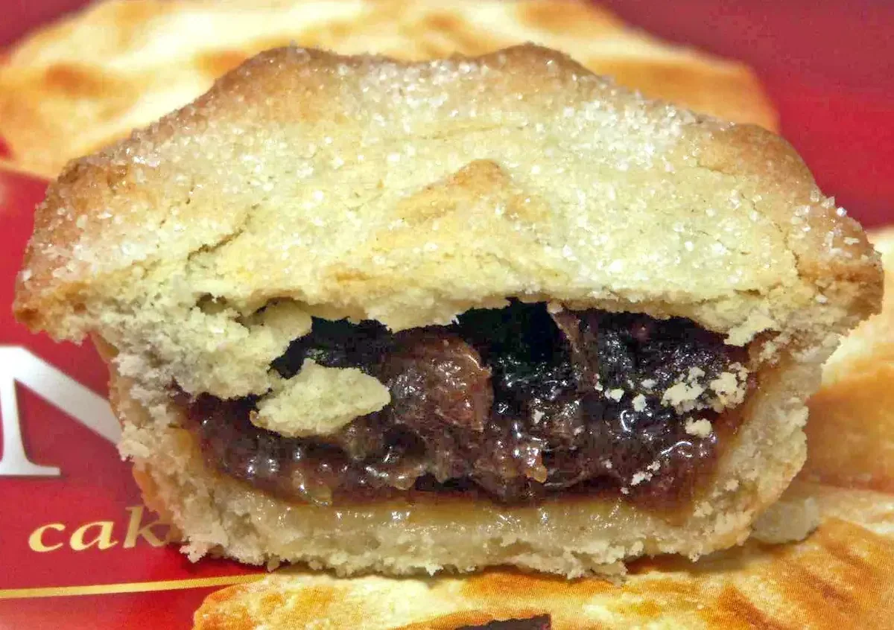
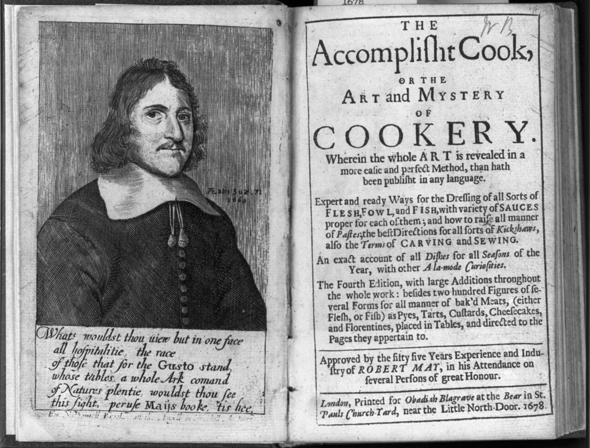
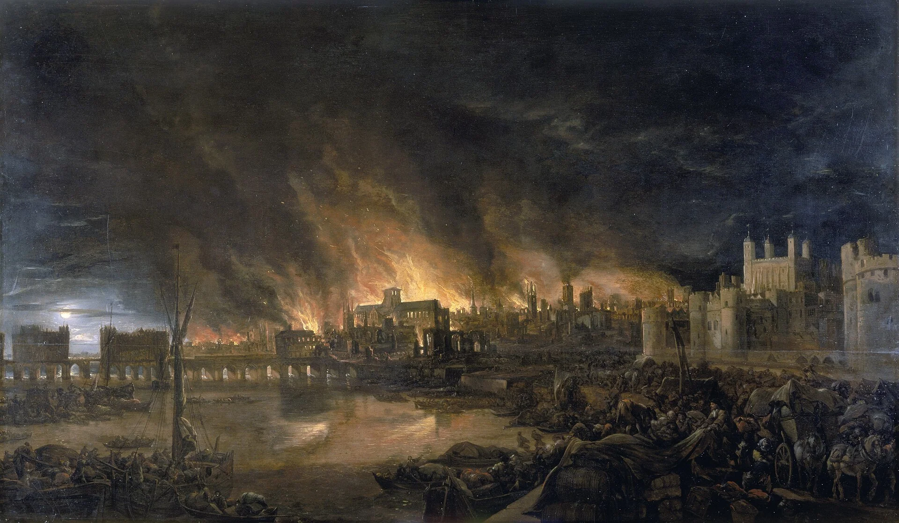
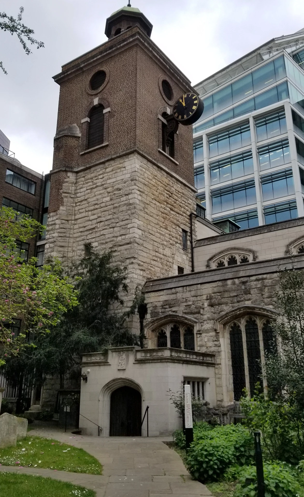
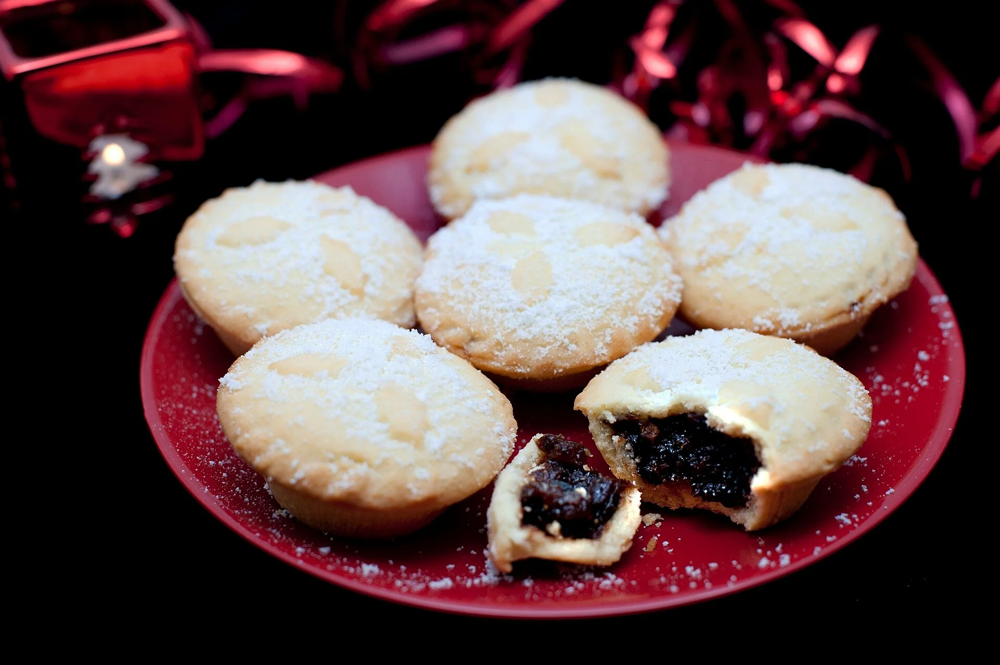

아직 펼치지 않은 카드성탄 밤의 식탁 · 2민스파이영국 성탄의 작은 과자 민스파이에는 원래 무엇이 들어 있었을까요?이 달콤한 파이에 옛날엔 고기가 들어갔대!
1666년 성탄 전야영국 런던 · 시싱 레인의 피프스 집 부엌
민스파이
큰불이 휩쓸고 간 1666년 런던, 성탄 전날 밤. 일기 작가 피프스의 집 부엌에서는 새벽 네 시까지 민스파이를 빚었어요. 같은 시대 요리책의 차례대로 긴 파이 껍질을 하나씩 채워 보세요.
옛날 런던의 성탄 전날 밤, 한 집 부엌에서 새벽까지 고기 파이를 만들었대. 우리도 하나씩 채워 볼까?
검수 전 시안이에요(기준서 1판). 그 밤의 일은 새뮤얼 피프스의 일기(1666년 12월 24·25일)를, 파이에 넣는 차례는 로버트 메이의 요리책을 따랐어요. 일기에 없는 그 밤의 차례는 지어내지 않았어요. 무대 그림은 이 안내서가 그렸고, 상상은 ‘눈 감고 상상해 보기’에만 썼어요.
시안 확인용카드 단계 미리 보기
1
1660년, 요리사의 책
1660년, 두툼한 요리책 한 권이 나왔어요. 요리사 로버트 메이(Robert May, 1588년생)의 『솜씨 좋은 요리사』(The Accomplisht Cook)예요. 영국 최초의 본격적인 요리책으로 꼽혀요.
메이는 프랑스에서 5년 동안 일하며 요리를 배웠고, 가톨릭과 왕당파 귀족 집안의 부엌에서 일했어요. 그의 책에는 민스파이 만드는 법이 여러 가지 실려 있어요.

“소고기 엉덩잇살의 껍질을 걷어 내고 잘게 썰어요. 소기름을 넣어 함께 다지고, 후추·정향·메이스·육두구와 소금으로 간해요. 고기의 절반만큼 건포도·커런트·말린 자두를 넣어요.”
로버트 메이, 『솜씨 좋은 요리사』의 ‘소고기 민스파이 만들기’(1685년 판) · 이 안내서가 줄여 우리말로 옮김
책이 나온 1660년은 왕정이 돌아온 해예요. 옥스퍼드 음식 백과는 메이가 이때를 기다렸다가 책을 냈을 것이라고 봐요.
옛날 요리사 아저씨가 쓴 요리책이야. 민스파이에 소고기랑 기름이랑 건포도를 넣으래!
물어보기고기랑 건포도를 같이 넣은 파이는 무슨 맛일까?
2
불탄 도시의 가을
1666년 9월 2일 새벽 세 시쯤, 런던 해군 사무소 곁에 사는 새뮤얼 피프스(Samuel Pepys, 1633~1703)의 집. 하녀 제인이 시내에 큰불이 났다며 식구들을 깨웠어요. 불은 푸딩 레인의 왕실 빵집에서 시작됐어요.
이틀 뒤 불길이 다가오자, 피프스는 이웃 윌리엄 펜 경과 구덩이를 파고 포도주를, 그리고 자기 파르메산 치즈를 묻었어요.

불길은 피프스가 다니던 세인트 올라프 교회 90미터 남짓 앞까지 왔어요. 하지만 바람이 바뀌어 교회는 불을 견뎠어요.
아주 큰불이 나서 런던이 많이 탔어. 피프스 아저씨는 땅을 파서 치즈를 묻었대!
물어보기피프스는 치즈를 지키려고 했어. 너라면 무엇을 꼭 지키고 싶어?
3
성탄 전야, 새벽 네 시까지
넉 달 뒤, 1666년 12월 24일 밤. 피프스는 일기에 집안 사람들이 민스파이를 만드느라 바쁘다고 적고 잠자리에 들었어요.
아내 엘리자베스는 잠들지 않고 새벽 네 시까지 하녀들이 민스파이를 빚는 것을 지켜보았어요. 아래 식탁에서, 메이의 요리책 차례대로 긴 파이 껍질을 하나씩 채워 보세요.
우리 집이라면?
“아내는 오늘 새벽 네 시까지 깨어 앉아, 하녀들이 민스파이 만드는 것을 지켜보았다.”
새뮤얼 피프스의 일기, 1666년 12월 25일 · 이 안내서가 우리말로 옮김
그 밤 부엌에서 무엇을 어떤 차례로 넣었는지는 일기에 없어요. 무대의 차례는 같은 시대 메이의 요리책을 따랐어요.
성탄 전날 밤, 피프스네 부엌이야. 하녀 언니들이 새벽까지 민스파이를 만들었대. 우리도 하나씩 채워 볼까?
물어보기새벽 네 시까지 깨어 있는 부엌에서는 어떤 냄새가 날까?
4
성탄 아침의 식탁
성탄 아침, 피프스는 늦게까지 누워 있다가 일어났어요. 새벽까지 깨어 있던 아내는 더 자게 두었어요.
피프스는 세인트 올라프 교회에 가서 밀스 목사의 좋은 설교를 들었어요. 집에 와서는 아내와 동생, 바커와 함께 구운 소갈비와 민스파이로 잘 먹었어요.

“내 마음은 참된 기쁨으로 가득했고, 오늘 내 처지가 이렇게 좋은 것을 전능하신 하나님께 감사했다.”
새뮤얼 피프스의 일기, 1666년 12월 25일 · 이 안내서가 우리말로 옮김
세인트 올라프 교회는 큰불을 견딘 몇 안 되는 중세 교회 가운데 하나예요. 피프스와 엘리자베스는 지금 이 교회에 나란히 잠들어 있어요.
피프스는 성탄 아침, 마음이 기쁨으로 가득하다며 감사를 적었어요. 우리 집이라면 무엇에 가장 먼저 감사할까요?
성탄 아침! 피프스 아저씨는 교회에 다녀와서 소갈비랑 민스파이를 먹었어. 마음이 기쁨으로 가득했대.
물어보기성탄 아침에 우리 가족은 무엇을 먹으면 좋을까?
5
고기가 빠진 파이
18세기 중반부터 민스파이는 짭짤한 고기 요리에서 달콤한 과자로 바뀌기 시작했어요. 설탕이 싸지면서 단 파이가 더 사랑받았어요.
20세기에 들어서는 고기가 거의 빠졌어요. 다진 것이라는 뜻의 이름 ‘민스’만 옛 고기 파이를 기억해요.
그리고 1666년 성탄 전야의 그 밤은, 피프스의 일기 한 줄이 기억해요.

“집안 사람들은 민스파이를 만드느라 바쁘다. 그리고 나는 잠자리에 들었다.”
새뮤얼 피프스의 일기, 1666년 12월 24일 · 이 안내서가 우리말로 옮김
지금 민스파이에는 고기가 거의 없어. 말린 과일이 가득한 달콤한 파이야.
물어보기옛날 고기 민스파이와 지금 과일 민스파이, 너는 어떤 걸 먹어 보고 싶어?
눈 감고 상상해 보기
촛불 하나가 밝힌 겨울밤 부엌. 칼이 도마를 두드리는 소리, 정향과 육두구 냄새, 손등에 묻은 밀가루. 하품을 참는 하녀들 곁에서 엘리자베스가 긴 파이를 지켜봐요. 불탄 도시의 창밖이 희뿌옇게 밝아 오면, 성탄 아침이에요.
눈을 감아 봐. 촛불 하나 켠 깜깜한 부엌이야. 탁탁탁 고기 다지는 소리, 달콤한 향신료 냄새. 하품이 나와도 꾹 참고 파이를 채워. 창밖이 밝아지면 성탄 아침이야!
나의 자리
피프스는 먼저 잠자리에 들었고, 엘리자베스와 하녀들은 새벽 네 시까지 깨어 있었어요. 그 밤 부엌에 있었다면, 나는 어디에 있었을까요?
그 밤 부엌에 있었다면, 너는 파이를 빚을래, 지켜볼래, 먼저 잘래?
마음에 닿는 한 줄을 고르거나 직접 써 보세요. 한 줄을 남기면 이 자리의 도장이 찍혀요. 이 기기에만 저장돼요.
더 깊이
궁금한 칸만 펼쳐 읽어도 괜찮아요.
알고 보면
새뮤얼 피프스 1633~1703. 런던 시싱 레인의 해군 사무소에서 일하며 그 곁에 살았어요. 그가 남긴 일기는 큰불이 난 해의 런던을 날마다 보여 줘요.
헤일스의 초상 1666년 3월 17일부터 피프스는 화가 존 헤일스 앞에 앉았어요. 그림을 위해 인도풍 가운을 빌려 입었고, 손에 든 악보는 피프스가 직접 곡을 붙인 노래 「아름다움이여, 물러가라」(Beauty, retire)예요. 5월 16일 그림값 14파운드와 액자값 25실링을 치렀어요.
코핀 옛 파이 껍질은 밀가루와 물로 빚어 아주 단단했어요. 구운 뒤에도 먹기 힘들어, 가난한 이들에게 나눠 주거나 짐승에게 주기도 했어요.
커런트 씨 없는 작은 건포도예요. 1640년 이후 의회는 커런트 수입을 막고 고기·생선·소금 같은 먹을거리에 세금을 매겼어요. 청교도가 다스리던 시절 성탄 상은 그만큼 비싸졌어요.
긴 파이에서 작은 파이로 크기도 달라졌어요. 옛 파이는 온 식구와 손님이 한자리에서 나눠 먹을 만큼 크고 길쭉했어요. 지금은 한 손에 쏙 들어오는 작은 파이예요.
기록마다 다른 점
민스파이 금지법? ‘성탄에 민스파이를 먹으면 불법’이라는 말을 영국 의회 역사 연구소는 ‘되풀이되는 신화’라고 불러요. 1647년 6월 8일 의회는 성탄·부활절·성령강림절을 축일로 지키지 못하게 했지만, 음식을 막는 조항은 없었어요.
1644년의 성탄 그해 성탄은 법으로 정한 금식일인 수요일과 겹쳤어요. 그래서 그해에는 민스파이를 먹는 일도 막힌 셈이라고 소개하는 글도 있어요(영국 법률위원회 자료, 런던대 고등법학연구소 블로그). 같은 자료도 민스파이 자체를 금지한 법은 없었다고 적어요.
긴 파이는 구유 모양? 17세기 영국 학자 존 셀던(1584~1654)은 『탁상 담화』(1689)에서 성탄 파이의 긴 코핀이 구유를 본뜬 것이라고 했어요. 음식사학자 아이번 데이는 파이가 그런 모양이었다고 분명히 말한 사람은 셀던 하나뿐이라고 해요.
직접 가 보기
확인한 날 · 2026년 11월 18일 · 바뀌기 쉬운 정보라 정기적으로 다시 확인해요
세인트 올라프 교회는 런던 시티의 시싱 레인 가에 있어요. 피프스는 해군 사무소와 계단으로 이어지는 회랑을 교회 안에 지었어요. 회랑은 헐렸지만, 그 계단 문 자리에 기념판이 있어요.
여는 날과 시간은 바뀔 수 있으니 교회 누리집에서 미리 확인해 주세요.
요리책 차례대로 금박
메이의 요리책 차례(고기 → 기름 → 향신료 → 말린 과일)대로 채우고 뚜껑까지 덮으면 카드에 금박이 입혀져요.
껍질 → 고기 → 기름 → 향신료 → 말린 과일 → 뚜껑 차례로 채우기
성탄 아침의 감사 채색
둘 가운데 하나만 해도 카드가 채색돼요.
피프스처럼, 성탄 아침에 감사할 한 가지 고르기
아이와 함께 ‘영화처럼 보기’를 끝까지 보기
근거 보기 (14)
- 새뮤얼 피프스의 일기, 1666년 12월 24일 — 집안 사람들이 민스파이를 만드느라 바쁨
- 새뮤얼 피프스의 일기, 1666년 12월 25일 — 아내가 새벽 네 시까지 하녀들의 민스파이 빚기를 지켜봄, 교회와 밀스 목사, 소갈비와 민스파이, 참된 기쁨과 감사
- 새뮤얼 피프스의 일기, 1666년 9월 2일 — 새벽 세 시 제인이 깨움, 푸딩 레인의 왕실 빵집
- 새뮤얼 피프스의 일기, 1666년 9월 4일 — 윌리엄 펜 경과 구덩이를 파서 포도주와 파르메산 치즈를 묻음
- 세인트 올라프 교회, 「Our Story」 — 큰불을 견딘 중세 교회, 불길이 100야드 앞까지, 피프스 부부의 무덤, 회랑과 기념판, 여는 시간
- 런던 국립초상화미술관 NPG 211 — 존 헤일스의 피프스 초상(1666), 인도풍 가운, 악보 「Beauty, retire」, 그림값
- 옥스퍼드 음식 백과 ‘로버트 메이’ 항목 — 1588년생, 1660년 첫 본격 영국 요리책, 프랑스 5년, 가톨릭·왕당파 집안, 왕정복고를 기다린 출간
- 로버트 메이, 『솜씨 좋은 요리사』(1685년 판, 프로젝트 구텐베르크) — ‘소고기 민스파이 만들기’, 다른 파이의 ‘close it up and bake it’
- 컨트리 라이프(2022.12.3) 「민스파이에 정말 고기가 들었을까?」 — 코핀, 양고기, 값비싼 향신료, 크고 길쭉한 파이, 18세기 중반부터 달콤해짐, 20세기 고기 없는 파이
- 아이번 데이 블로그 「Shaped Minc’d Pies Again」(2011.12.24) — 셀던 『탁상 담화』(1689)의 구유 설명과 그 근거의 한계
- 영국 의회 역사 연구소(2013.12.22) 「내전기의 의회와 성탄」 — 1647년 6월 8일 축일 폐지, 민스파이 금지법은 신화
- 영국 의회 역사 연구소(2020.12.23) 「청교도가 성탄 만찬을 금지했을까?」 — 1640년 이후 커런트 수입 금지, 먹을거리 세금
- 런던대 고등법학연구소 블로그(2021.12.22) — 1644년 성탄과 금식일, 영국 법률위원회 「Legal Curiosities」
- 위키미디어 공용: 「런던 대화재」 그림 정보(1675년 무렵, 타워 부두 가까운 배에서 본 모습)
그림·사진·소리 출처
‘처음 만나는 기독교 문화’의 깊은 카드예요. 실제 인물의 사진은 쓰지 않았어요. 카드 단계와 남긴 글은 이 기기에만 저장돼요.